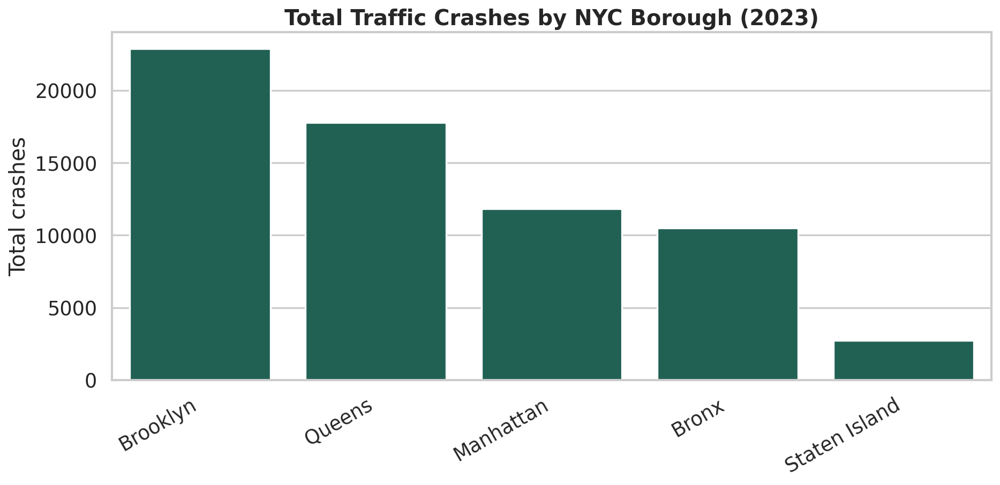
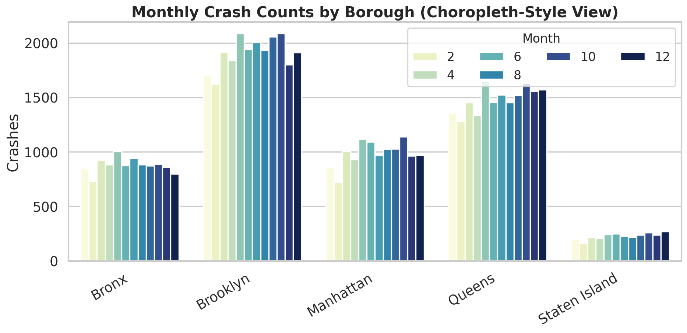
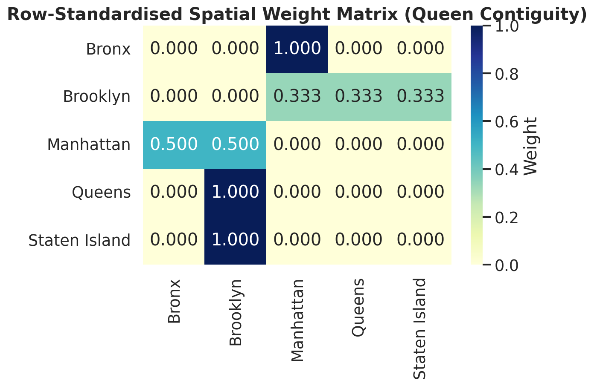
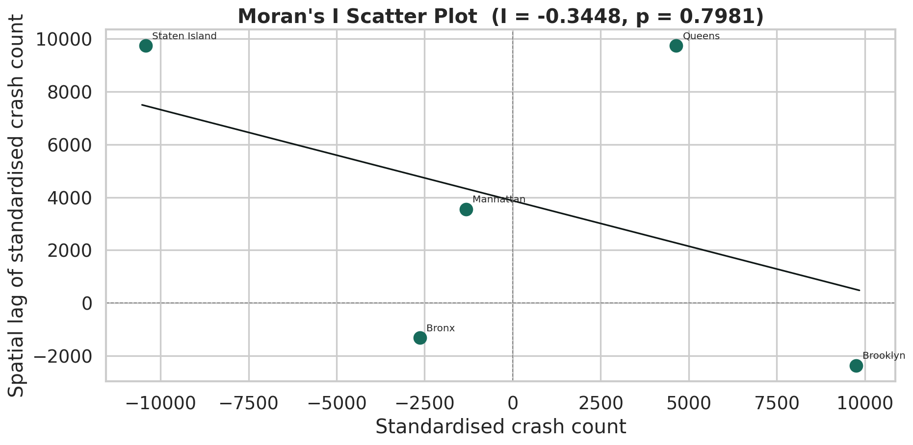
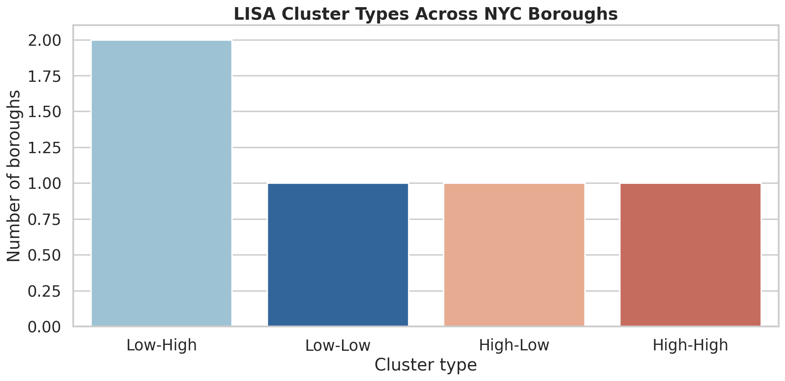
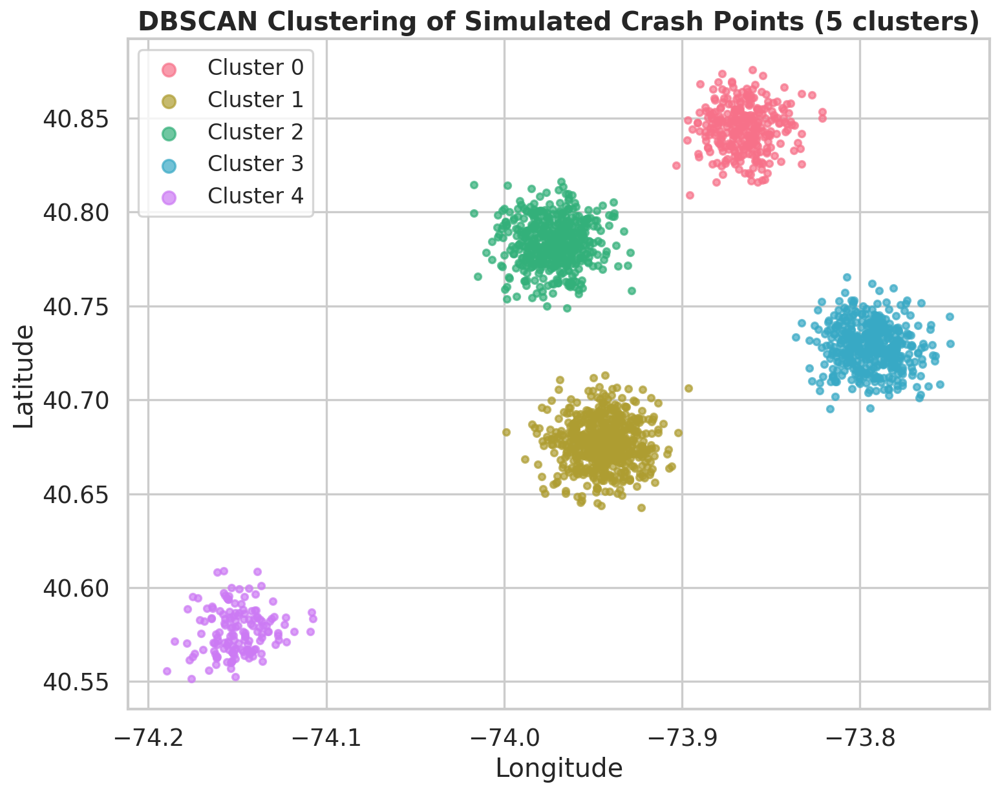
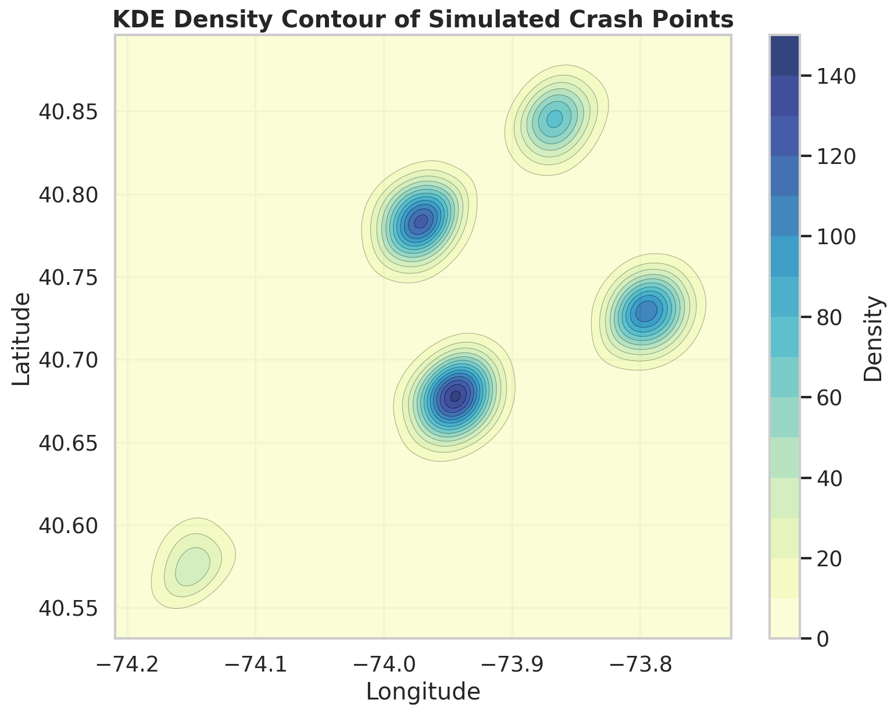
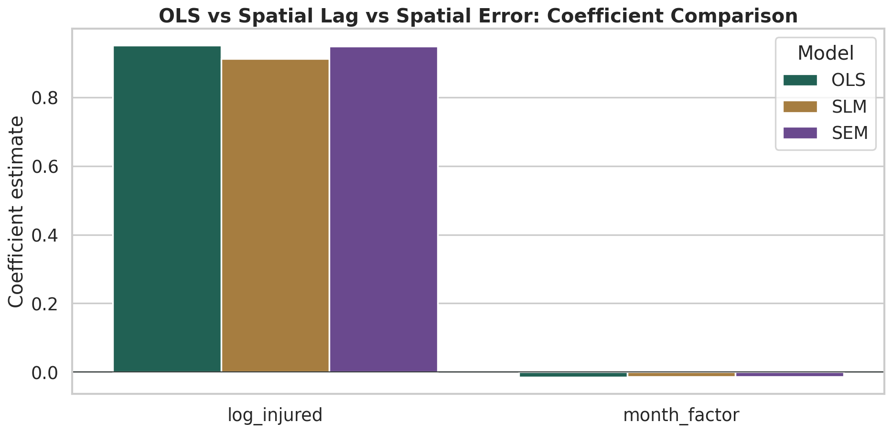
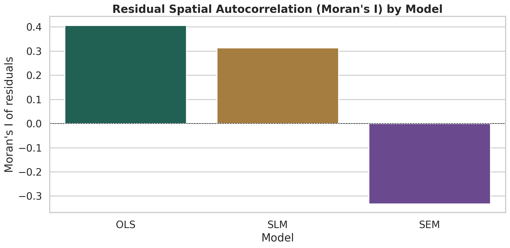
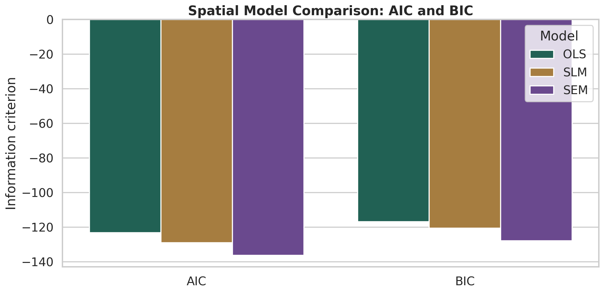

各行政区事故数量
柱状图展示纽约五区的事故总量差异，Brooklyn 和 Manhattan 事故数最高。
Model Results
这一页展示空间分析的典型结果：事故空间分布、空间自相关检验、热点识别和空间回归模型比较。
01
从空间分布入手，观察事故在不同区域的聚集情况，再通过分级设色图对比各行政区的事故率差异。

柱状图展示纽约五区的事故总量差异，Brooklyn 和 Manhattan 事故数最高。

按事故率着色的行政区地图，直观展示高事故率区域的空间分布。
02
空间自相关检验回答"事故在空间上是否聚集"。全局 Moran's I 检验整体集聚趋势，局部 LISA 识别具体热点和冷点区域。

Queen 邻接权重矩阵的热力图表示各行政区之间的空间邻接关系。

散点图的斜率即为 Moran's I 统计量，用于检验空间自相关是否显著。

局部 Moran's I 识别四类集聚：高-高（热点）、低-低（冷点）、高-低和低-高（空间异常）。
Moran's I 取值范围约 [-1, 1]，正值表示空间正相关（相似值聚集），负值表示空间负相关（相异值聚集），0 表示空间随机。本例中 I = -0.345，p = 0.798，统计上不显著——这在仅有 5 个行政区的小样本中是正常结果。
High-High 表示该区域值高且周围也高（热点），Low-Low 表示值低且周围也低（冷点），High-Low 和 Low-High 是空间异常值——自身值与周围相反。
| 统计量 | 值 | 解释 |
|---|---|---|
| Moran's I | -0.345 | 负值，提示空间负相关趋势 |
| 期望值 E[I] | -0.250 | 零假设下的期望值 = -1/(n-1) |
| z 得分 | -0.256 | 绝对值小于 1.96，不显著 |
| p 值 | 0.798 | 远大于 0.05，不能拒绝空间随机假设 |
| 样本量 n | 5 | 样本量较小，检验功效有限 |
| 行政区 | LISA 值 | 集聚类型 | 解释 |
|---|---|---|---|
| Queens | 0.967 | High-High | 高事故率区域被高事故率邻居包围 |
| Bronx | 0.075 | Low-Low | 低事故率区域被低事故率邻居包围 |
| Brooklyn | -0.494 | High-Low | 高事故率但邻居事故率较低 |
| Manhattan | -0.101 | Low-High | 自身低但邻居事故率较高 |
| Staten Island | -2.172 | Low-High | 空间异常值，自身极低但邻居较高 |
03
DBSCAN 和核密度估计（KDE）是两种常用的事故热点识别方法。前者基于密度聚类，后者基于连续密度面。

基于密度聚类识别事故密集区域，噪声点不归属任何簇。

KDE 生成连续密度面，直观展示事故黑点的空间位置和强度。
| 簇编号 | 点数 | 主要行政区 | 中心经度 | 中心纬度 |
|---|---|---|---|---|
| 0 | 300 | Bronx | -73.87 | 40.84 |
| 1 | 600 | Brooklyn | -73.94 | 40.68 |
| 2 | 500 | Manhattan | -73.97 | 40.78 |
| 3 | 450 | Queens | -73.79 | 40.73 |
| 4 | 150 | Staten Island | -74.15 | 40.58 |
04
当因变量存在空间依赖时，普通最小二乘（OLS）估计可能偏误。空间滞后模型（SLM）和空间误差模型（SEM）通过引入空间项来捕捉空间效应。

对比三种模型的回归系数，空间项的引入可能改变系数的大小和方向。

对 OLS 残差做 Moran's I 检验，判断残差是否仍存在空间自相关。

用 AIC 和 R² 比较 OLS、SLM、SEM，SEM 在本例中拟合最优。
| 模型 | AIC | R² | BIC | 解释 |
|---|---|---|---|---|
| OLS | -123.2 | 0.988 | -117.0 | 基准模型，未考虑空间依赖 |
| SLM | -128.9 | 0.989 | -120.6 | 引入空间滞后项，AIC 改善 |
| SEM | -136.3 | 0.990 | -127.9 | 引入空间误差项，AIC 最优 |
05